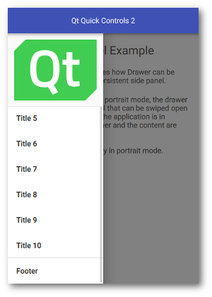
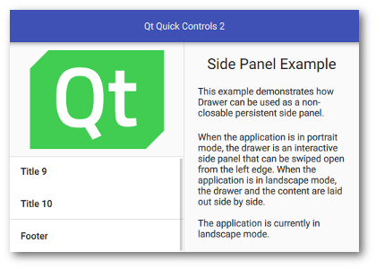

Qt Quick Controls - Side Panel
A persistent side panel with Drawer.
This example demonstrates how Drawer can be used as a persistent side panel.
|
 An interactive Drawer in portrait mode |
 A non-interactive Drawer in landscape mode |
When the application is in portrait mode, the drawer is an interactive side panel that can be swiped open from the left edge. It appears on top of the content, blocking user interaction through its modal background. When the application is in landscape mode, the drawer and the content are laid out side-by-side.
The current orientation of the application is determined by comparing the width and height of the window:
readonly property bool inPortrait: window.width < window.height
This is used to determine whether the drawer should be modal and interactive, and to configure its position and visibility accordingly.
Drawer {
...
modal: inPortrait
interactive: inPortrait
position: inPortrait ? 0 : 1
visible: !inPortrait
...
}
Running the Example
To run the example from Qt Creator, open the Welcome mode and select the example from Examples. For more information, visit Building and Running an Example.